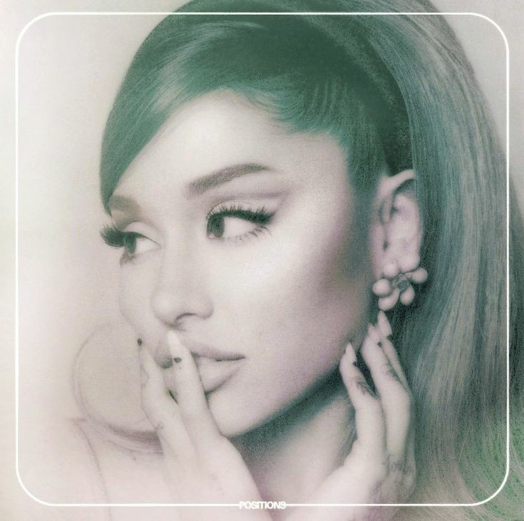

Trayectoria musical
Su álbum debut de pop y R&B influenciado por el doo wop de la década de 1950, Yours Truly (2013), encabezó el Billboard 200 de Estados Unidos, mientras que su sencillo principal, «The Way», llegó al top 10 del Billboard Hot 100 de Estados Unidos. La voz y el registro de silbidos de Grande en el álbum generaron comparaciones inmediatas con Mariah Carey.
Para más información: Click aquí
Album más reconocido

- Shut Up
- 34+35
- Motive» (con Doja Cat)
- Just Like Magic
- Off the Table» (con The Weeknd)
- Six Thirty
- Safety Net» (junto a Ty Dolla Sign)
- My Hair
- Nasty
- West Side